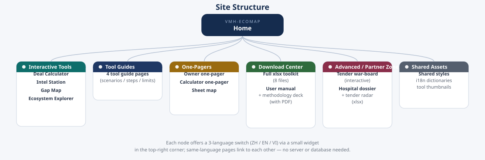

First, tell us who you are
Different roles care about different questions — here are direct paths, no need to hunt.
Hospital Owner
2. Deal Calculator model your project
3. Owner one-pager take it to the meeting
Investor
2. Regulatory clock check the timing
3. Market data every figure sourced
Alliance Partner
2. Vendor directory see who else is there
3. Sheet map see the whole picture
Advisor / Internal
2. How updates work maintenance model
3. Advanced / Partner zone tender & dossier tools
Interactive Tools
No install, no download — click and use. Everything runs in your browser; nothing you enter is uploaded.
Deal Calculator
- Live modeling in an owner meeting
- Making the case to replace old equipment
- Mandatory spend ahead of a regulatory deadline
- Pick a category——Six buttons up top: A Revenue-…
- Load a preset case——Each category ships 3-4 preset…
- Adjust and watch it update——Hover the ⓘ next to any field …
Vietnam Healthcare Intel Station
- Confirming timing before a pitch
- Getting asked about competitors
- Needing a citable number for a deck
- Read the regulatory clock——Not-yet-effective items sort f…
- Check competitor activity——Click a company name to open i…
- Maintain the data yourself——Top-right "✎ Edit Data" lets y…
Vietnam Gap Map
- Deciding where to focus first
- Briefing an owner on local opportunity
- Spotting nationwide structural gaps
- Click a province tile——Local facts and sources expand…
- Review the national gap cards——Six cards below cover cross-pr…
- Update the data——Top-right "⟳ Load Update" impo…
Ecosystem Explorer
- Helping a partner self-position
- Projecting in a planning meeting
- Finding whitespace
- Browse by layer or category——Seven layers: L1 Physical Infr…
- Click a card for detail——Each opportunity shows its des…
- (Advanced) Load your own Excel——If you have the master Excel t…
One-Pagers
The condensed version for people with no time — one page, one idea.
Advanced / Partner Zone
Once a deal moves from "evaluate" to "pursue," these are the working tools — target locking and bid preparation. This zone gets into single-deal specifics; confirm your role with the alliance coordinator before using it.
Excel Downloads
Download Center
Files for offline work. Open the Excel tools on a desktop; documents ship with a PDF too, so they open fine on a phone.
About This Site
Three questions you might ask.
Where does the data come from?
Regulations come from official Vietnamese government notices and legal databases; market data comes from the Ministry of Health, the social insurance agency, international research bodies, and industry media; vendor track records come from company websites, annual reports, and news coverage. Every entry carries a source and verification date — unverifiable items are marked "not found," estimates are marked "estimate." Never inventing numbers is this toolkit's first principle.
How often is it updated?
The intel station and gap map re-verify automatically once a month (regulatory timing changes, vendor moves, market data, provincial news) and publish a new version. Anything unrefreshed past 120 days flags itself "needs update" right on the page.
Can I use these numbers directly?
Preset cases in the calculator are market-rate estimates for demonstrating methodology and training — not an actual quote from any hospital. Replace them with real pricing and hospital data before a formal proposal. The tool's value is in "correct methodology," not "ready-made numbers."
Site Map
